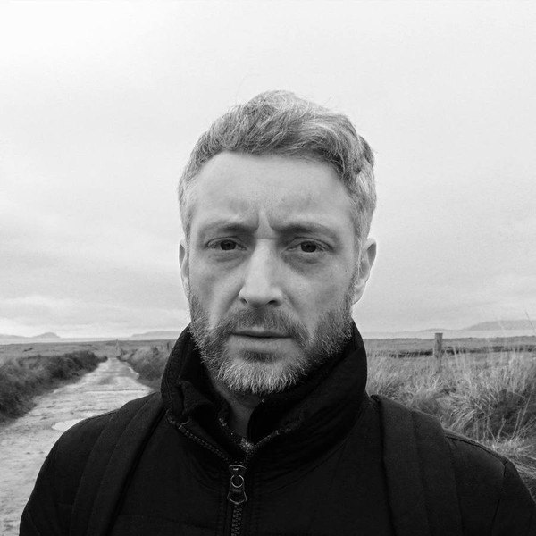
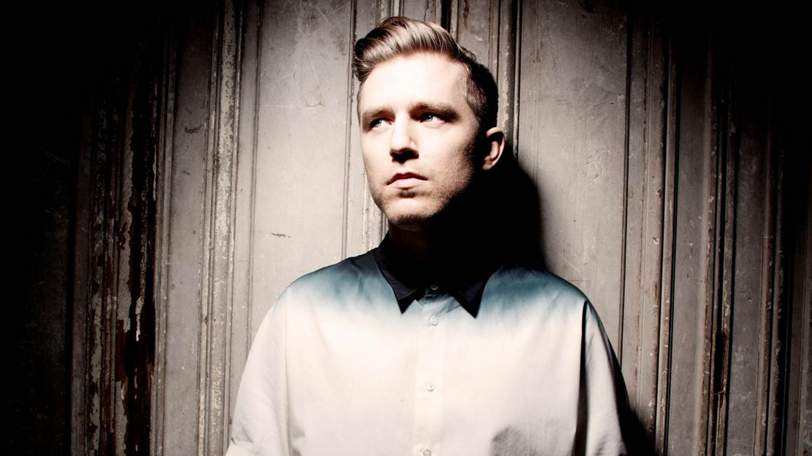
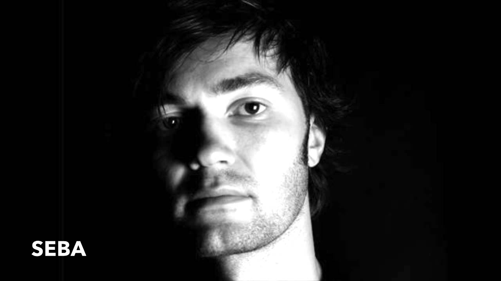
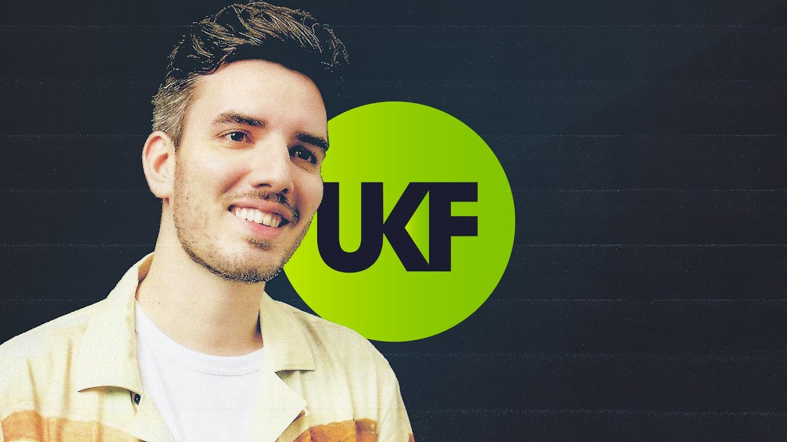
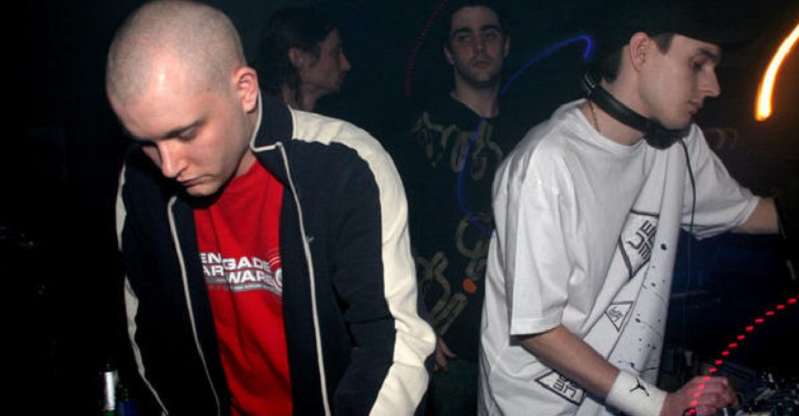
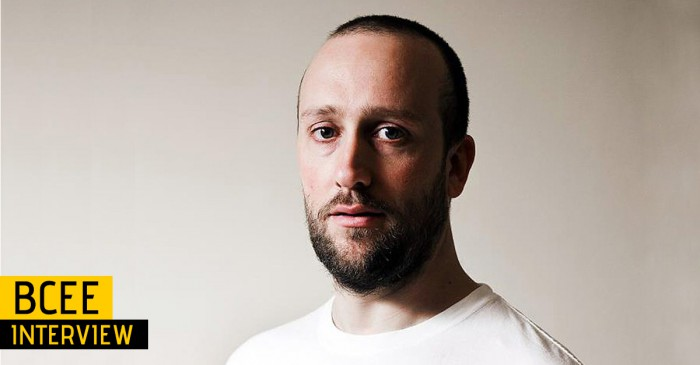
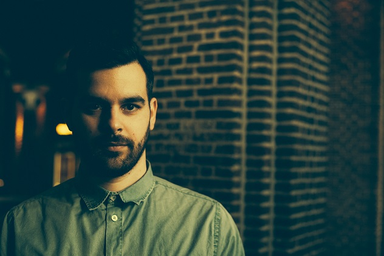

DJS
Calibre
Dominick Martin , más conocido por su nombre artístico Calibre , es un productor de música de batería y bajo de Irlanda del Norte y DJ de Belfast . Comenzó a producir a una edad temprana. Es un músico de formación clásica que toca una variedad de instrumentos musicales. Martin comenzó a producir Drum and Bass en 1995 y su primer lanzamiento firmado fue acreditado bajo el ahora desaparecido sello discográfico Quadrophonic. 
Sub Focus
Nick Douwma, más conocido como Sub Focus (Guildford, Reino Unido, 13 de abril de 1982) es un productor discográfico británico de música electrónica. Ha estado produciendo música desde el 2003 y cuenta con dos álbumes de estudio. El 12 de octubre de 2009 lanzó su álbum homónimo Sub Focus y su segundo álbum Torus fue editado en septiembre del 2013 
Seba
Sebastian Ahrenberg , más conocido como Seba , es un productor sueco de drum and bass y DJ [1] Seba también es el propietario de Secret Operations , un sello discográfico de drum and bass. El primer lanzamiento profesional de Seba fue Sonic Winds , una colaboración con Lo-tek en Good Looking Records de LTJ Bukem en 1995. El dúo lanzó Universal Music en Good Looking, después de lo cual Seba pasó a producir una serie de lanzamientos en solitario en varios Bukem- etiquetas propias. 
Netsky
Boris Daenen (Edegem, 22 de marzo de 1989), más conocido como Netsky, es un productor discográfico, disc-jockey y músico de drum and bass belga. Su nombre procede del virus informático homónimo. Netsky generalmente produce música funk líquida, un subgénero de música de batería y bajo. Su música ha sido fuertemente influenciada por el remix Gold Digger de High Contrast. A finales de 2009, Netsky firmó un contrato con Hospital Records. El 30 de mayo de 2010 lanzó su álbum debut, Netsky. Recibió una nominación como "Mejor productor futuro" en los premios Drum + Bass Arena Awards unos meses después de su debut. El 25 de junio de 2012 lanzó su segundo álbum, 2. El 3 de junio de 2016 vio el lanzamiento de su último trabajo, 3, lo que resultó en un giro estilístico decisivo hacia géneros más comerciales. 
Unknown Error
Desde que Renegade Hardware recogió por primera vez una canción de Unknown Error en 2004, nada ha detenido al colectivo nacido y criado en Kent. Unknown Error irrumpió en escena con su lanzamiento debut de "Shadows" en Renegade Hardware en enero de 2005, que apareció en el primer lanzamiento de Hardware de 2005, The Chronicles vol.4 EP. Este lanzamiento entró directamente en el número 8 en las listas BBC 1Xtra DnB y apareció en el CD Guerrilla Warfare mezclado por Grooverider. Las pistas de Trouble On Vinyl, Cymbalism y uno de los EP más fuertes de Moving Shadow siguieron para llevar a Unknown Error mucho más allá de ser recién llegados. 
BCee
En una época en la que aparentemente todos los DJ y sus perros tienen un sello discográfico, es un verdadero logro mantenerse a flote con tantos sellos que luchan por una participación limitada en el mercado. Sin embargo, después de cinco años, Spearhead Records se ha ganado legítimamente una reputación impecable entre los aficionados al drum & bass por lanzar constantemente buena música; desde líquido dulce y conmovedor y mínimo escaso hasta entrenamientos completos en la pista de baile. 
Lenzman
Emergiendo de una relativa oscuridad, el productor holandés 'Lenzman' está haciendo olas rápidamente en el mundo Drum & Bass con su visión profunda y conmovedora de este género underground. Influenciado por el hip hop, el soul, el jazz y la vida en general, la música de Lenzman combina los ritmos orgánicos de antaño con la energía y la actitud progresista de la música Drum & Bass. 